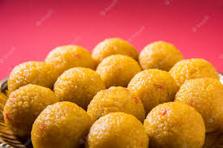
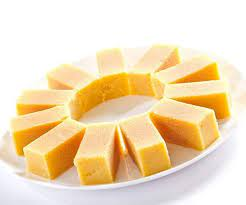

|  |
Laddu Sweets
Laddu or laddoo is a spherical sweet from the Indian subcontinent.
Made of various ingredients and sugar syrup or jaggery.
Details |
MysorePak Sweets
Mysore pak is an Indian sweet prepared in ghee.
It originated in the city of Mysore.
Details |
 |
 |
Jalebi Sweets
Jalebi is a popular sweet snack in south and west Asia, Africa.
It goes by many names, including jilapi, zelepi, jilebi, jilipi.
Details |
GulabJamun sweets
Gulab jamun is an Indian dessert of fried dough balls.
That are soaked in a sweet, sticky sugar syrup
Details |
 |
Description:
Laddu or laddoo is a spherical sweet from the Indian subcontinent made of various ingredients and sugar syrup or jaggery.
It has been described as "perhaps the most universal and ancient of Indian sweets."
Mysore pak is an Indian sweet prepared in ghee. It originated in the city of Mysore, one of the major cities in the Indian state of Karnataka.
It is made of generous amounts of ghee, sugar, gram flour, and often cardamom. The texture of this sweet is similar to a buttery and dense cookie.
Jalebi is a popular sweet snack in south and west Asia, Africa.
It goes by many names, including jilapi, zelepi, jilebi, jilipi.
Jalebis are Indian desserts made by deep-frying a wheat flour (maida flour) batter in pretzel or circular shapes, which are then soaked in sugar syrup.
They can be served warm or cold as well. They are sweet with chewy texture and crunchy crust.
Gulab jamun is an Indian dessert of fried dough balls that are soaked in a sweet, sticky sugar syrup.
As per tradition, the syrup has a delicate rose flavour: Gulab means 'rose water' and jamun refers to a berry of a similar size and colour.